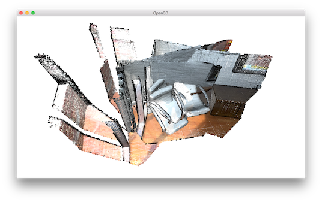
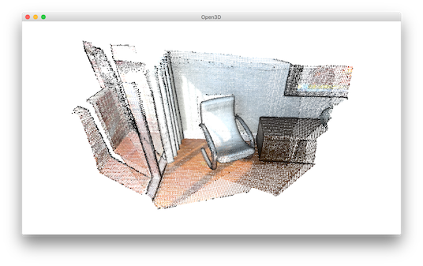

Multiway registration¶
Multiway registration is the process to align multiple pieces of geometry in a global space. Typically, the input is a set of geometries (e.g., point clouds or RGBD images) \(\{\mathbf{P}_{i}\}\). The output is a set of rigid transformations \(\{\mathbf{T}_{i}\}\), so that the transformed point clouds \(\{\mathbf{T}_{i}\mathbf{P}_{i}\}\) are aligned in the global space.
Open3D implements multiway registration via pose graph optimization. The backend implements the technique presented in [Choi2015].
5 6 7 8 9 10 11 12 13 14 15 16 17 18 19 20 21 22 23 24 25 26 27 28 29 30 31 32 33 34 35 36 37 38 39 40 41 42 43 44 45 46 47 48 49 50 51 52 53 54 55 56 57 58 59 60 61 62 63 64 65 66 67 68 69 70 71 72 73 74 75 76 77 78 79 80 81 82 83 84 85 86 87 88 89 90 91 92 93 94 95 96 97 98 99 100 101 102 103 104 105 | # examples/Python/Advanced/multiway_registration.py
import open3d as o3d
import numpy as np
voxel_size = 0.02
max_correspondence_distance_coarse = voxel_size * 15
max_correspondence_distance_fine = voxel_size * 1.5
def load_point_clouds(voxel_size=0.0):
pcds = []
for i in range(3):
pcd = o3d.io.read_point_cloud("../../TestData/ICP/cloud_bin_%d.pcd" % i)
pcd_down = pcd.voxel_down_sample(voxel_size=voxel_size)
pcds.append(pcd_down)
return pcds
def pairwise_registration(source, target):
print("Apply point-to-plane ICP")
icp_coarse = o3d.registration.registration_icp(
source, target, max_correspondence_distance_coarse, np.identity(4),
o3d.registration.TransformationEstimationPointToPlane())
icp_fine = o3d.registration.registration_icp(
source, target, max_correspondence_distance_fine,
icp_coarse.transformation,
o3d.registration.TransformationEstimationPointToPlane())
transformation_icp = icp_fine.transformation
information_icp = o3d.registration.get_information_matrix_from_point_clouds(
source, target, max_correspondence_distance_fine,
icp_fine.transformation)
return transformation_icp, information_icp
def full_registration(pcds, max_correspondence_distance_coarse,
max_correspondence_distance_fine):
pose_graph = o3d.registration.PoseGraph()
odometry = np.identity(4)
pose_graph.nodes.append(o3d.registration.PoseGraphNode(odometry))
n_pcds = len(pcds)
for source_id in range(n_pcds):
for target_id in range(source_id + 1, n_pcds):
transformation_icp, information_icp = pairwise_registration(
pcds[source_id], pcds[target_id])
print("Build o3d.registration.PoseGraph")
if target_id == source_id + 1: # odometry case
odometry = np.dot(transformation_icp, odometry)
pose_graph.nodes.append(
o3d.registration.PoseGraphNode(np.linalg.inv(odometry)))
pose_graph.edges.append(
o3d.registration.PoseGraphEdge(source_id,
target_id,
transformation_icp,
information_icp,
uncertain=False))
else: # loop closure case
pose_graph.edges.append(
o3d.registration.PoseGraphEdge(source_id,
target_id,
transformation_icp,
information_icp,
uncertain=True))
return pose_graph
if __name__ == "__main__":
o3d.utility.set_verbosity_level(o3d.utility.VerbosityLevel.Debug)
pcds_down = load_point_clouds(voxel_size)
o3d.visualization.draw_geometries(pcds_down)
print("Full registration ...")
pose_graph = full_registration(pcds_down,
max_correspondence_distance_coarse,
max_correspondence_distance_fine)
print("Optimizing PoseGraph ...")
option = o3d.registration.GlobalOptimizationOption(
max_correspondence_distance=max_correspondence_distance_fine,
edge_prune_threshold=0.25,
reference_node=0)
o3d.registration.global_optimization(
pose_graph, o3d.registration.GlobalOptimizationLevenbergMarquardt(),
o3d.registration.GlobalOptimizationConvergenceCriteria(), option)
print("Transform points and display")
for point_id in range(len(pcds_down)):
print(pose_graph.nodes[point_id].pose)
pcds_down[point_id].transform(pose_graph.nodes[point_id].pose)
o3d.visualization.draw_geometries(pcds_down)
print("Make a combined point cloud")
pcds = load_point_clouds(voxel_size)
pcd_combined = o3d.geometry.PointCloud()
for point_id in range(len(pcds)):
pcds[point_id].transform(pose_graph.nodes[point_id].pose)
pcd_combined += pcds[point_id]
pcd_combined_down = pcd_combined.voxel_down_sample(voxel_size=voxel_size)
o3d.io.write_point_cloud("multiway_registration.pcd", pcd_combined_down)
o3d.visualization.draw_geometries([pcd_combined_down])
|
Input¶
15 16 17 18 19 20 21 | def load_point_clouds(voxel_size=0.0):
pcds = []
for i in range(3):
pcd = o3d.io.read_point_cloud("../../TestData/ICP/cloud_bin_%d.pcd" % i)
pcd_down = pcd.voxel_down_sample(voxel_size=voxel_size)
pcds.append(pcd_down)
return pcds
|
The first part of the tutorial script reads three point clouds from files. The point clouds are downsampled and visualized together. They are misaligned.
{kind=link}
24 25 26 27 28 29 30 31 32 33 34 35 36 37 38 39 40 41 42 43 44 45 46 47 48 49 50 51 52 53 54 55 56 57 58 59 60 61 62 63 64 65 66 67 68 | def pairwise_registration(source, target):
print("Apply point-to-plane ICP")
icp_coarse = o3d.registration.registration_icp(
source, target, max_correspondence_distance_coarse, np.identity(4),
o3d.registration.TransformationEstimationPointToPlane())
icp_fine = o3d.registration.registration_icp(
source, target, max_correspondence_distance_fine,
icp_coarse.transformation,
o3d.registration.TransformationEstimationPointToPlane())
transformation_icp = icp_fine.transformation
information_icp = o3d.registration.get_information_matrix_from_point_clouds(
source, target, max_correspondence_distance_fine,
icp_fine.transformation)
return transformation_icp, information_icp
def full_registration(pcds, max_correspondence_distance_coarse,
max_correspondence_distance_fine):
pose_graph = o3d.registration.PoseGraph()
odometry = np.identity(4)
pose_graph.nodes.append(o3d.registration.PoseGraphNode(odometry))
n_pcds = len(pcds)
for source_id in range(n_pcds):
for target_id in range(source_id + 1, n_pcds):
transformation_icp, information_icp = pairwise_registration(
pcds[source_id], pcds[target_id])
print("Build o3d.registration.PoseGraph")
if target_id == source_id + 1: # odometry case
odometry = np.dot(transformation_icp, odometry)
pose_graph.nodes.append(
o3d.registration.PoseGraphNode(np.linalg.inv(odometry)))
pose_graph.edges.append(
o3d.registration.PoseGraphEdge(source_id,
target_id,
transformation_icp,
information_icp,
uncertain=False))
else: # loop closure case
pose_graph.edges.append(
o3d.registration.PoseGraphEdge(source_id,
target_id,
transformation_icp,
information_icp,
uncertain=True))
return pose_graph
|
A pose graph has two key elements: nodes and edges. A node is a piece of geometry \(\mathbf{P}_{i}\) associated with a pose matrix \(\mathbf{T}_{i}\) which transforms \(\mathbf{P}_{i}\) into the global space. The set \(\{\mathbf{T}_{i}\}\) are the unknown variables to be optimized. PoseGraph.nodes is a list of PoseGraphNode. We set the global space to be the space of \(\mathbf{P}_{0}\). Thus \(\mathbf{T}_{0}\) is identity matrix. The other pose matrices are initialized by accumulating transformation between neighboring nodes. The neighboring nodes usually have large overlap and can be registered with Point-to-plane ICP.
A pose graph edge connects two nodes (pieces of geometry) that overlap. Each edge contains a transformation matrix \(\mathbf{T}_{i,j}\) that aligns the source geometry \(\mathbf{P}_{i}\) to the target geometry \(\mathbf{P}_{j}\). This tutorial uses Point-to-plane ICP to estimate the transformation. In more complicated cases, this pairwise registration problem should be solved via Global registration.
[Choi2015] has observed that pairwise registration is error-prone. False pairwise alignments can outnumber correctly
aligned pairs. Thus, they partition pose graph edges into two classes. Odometry edges connect temporally close, neighboring nodes. A local registration algorithm such as ICP can reliably align them. Loop closure edges connect any non-neighboring nodes. The alignment is found by global registration and is less reliable. In Open3D, these two classes of edges are distinguished by the uncertain parameter in the initializer of PoseGraphEdge.
In addition to the transformation matrix \(\mathbf{T}_{i}\), the user can set an information matrix \(\mathbf{\Lambda}_{i}\) for each edge. If \(\mathbf{\Lambda}_{i}\) is set using function get_information_matrix_from_point_clouds, the loss on this pose graph edge approximates the RMSE of the corresponding sets between the two nodes, with a line process weight. Refer to Eq (3) to (9) in [Choi2015] and the Redwood registration benchmark for details.
The script creates a pose graph with three nodes and three edges. Among the edges, two of them are odometry edges (uncertain = False) and one is a loop closure edge (uncertain = True).
82 83 84 85 86 87 88 89 | print("Optimizing PoseGraph ...")
option = o3d.registration.GlobalOptimizationOption(
max_correspondence_distance=max_correspondence_distance_fine,
edge_prune_threshold=0.25,
reference_node=0)
o3d.registration.global_optimization(
pose_graph, o3d.registration.GlobalOptimizationLevenbergMarquardt(),
o3d.registration.GlobalOptimizationConvergenceCriteria(), option)
|
Open3D uses function global_optimization to perform pose graph optimization. Two types of optimization methods can be chosen: GlobalOptimizationGaussNewton or GlobalOptimizationLevenbergMarquardt. The latter is recommended since it has better convergence property. Class GlobalOptimizationConvergenceCriteria can be used to set the maximum number of iterations and various optimization parameters.
Class GlobalOptimizationOption defines a couple of options. max_correspondence_distance decides the correspondence threshold. edge_prune_threshold is a threshold for pruning outlier edges. reference_node is the node id that is considered to be the global space.
Optimizing PoseGraph ...
[GlobalOptimizationLM] Optimizing PoseGraph having 3 nodes and 3 edges.
Line process weight : 3.745800
[Initial ] residual : 6.741225e+00, lambda : 6.042803e-01
[Iteration 00] residual : 1.791471e+00, valid edges : 3, time : 0.000 sec.
[Iteration 01] residual : 5.133682e-01, valid edges : 3, time : 0.000 sec.
[Iteration 02] residual : 4.412544e-01, valid edges : 3, time : 0.000 sec.
[Iteration 03] residual : 4.408356e-01, valid edges : 3, time : 0.000 sec.
[Iteration 04] residual : 4.408342e-01, valid edges : 3, time : 0.000 sec.
Delta.norm() < 1.000000e-06 * (x.norm() + 1.000000e-06)
[GlobalOptimizationLM] total time : 0.000 sec.
[GlobalOptimizationLM] Optimizing PoseGraph having 3 nodes and 3 edges.
Line process weight : 3.745800
[Initial ] residual : 4.408342e-01, lambda : 6.064910e-01
Delta.norm() < 1.000000e-06 * (x.norm() + 1.000000e-06)
[GlobalOptimizationLM] total time : 0.000 sec.
CompensateReferencePoseGraphNode : reference : 0
The global optimization performs twice on the pose graph. The first pass optimizes poses for the original pose graph taking all edges into account and does its best to distinguish false alignments among uncertain edges. These false alignments have small line process weights, and they are pruned after the first pass. The second pass runs without them and produces a tight global alignment. In this example, all the edges are considered as true alignments, hence the second pass terminates immediately.
Visualize optimization¶
91 92 93 94 95 | print("Transform points and display")
for point_id in range(len(pcds_down)):
print(pose_graph.nodes[point_id].pose)
pcds_down[point_id].transform(pose_graph.nodes[point_id].pose)
o3d.visualization.draw_geometries(pcds_down)
|
Ouputs:
{kind=link}
The transformed point clouds are listed and visualized using draw_geometries.
Make a combined point cloud¶
97 98 99 100 101 102 103 104 105 | print("Make a combined point cloud")
pcds = load_point_clouds(voxel_size)
pcd_combined = o3d.geometry.PointCloud()
for point_id in range(len(pcds)):
pcds[point_id].transform(pose_graph.nodes[point_id].pose)
pcd_combined += pcds[point_id]
pcd_combined_down = pcd_combined.voxel_down_sample(voxel_size=voxel_size)
o3d.io.write_point_cloud("multiway_registration.pcd", pcd_combined_down)
o3d.visualization.draw_geometries([pcd_combined_down])
|
{kind=link}
PointCloud has convenient operator + that can merge two point clouds into single one.
After merging, the points are uniformly resampled using voxel_down_sample.
This is recommended post-processing after merging point cloud since this can relieve duplicating or over-densified points.
Note
Although this tutorial demonstrates multiway registration for point clouds. The same procedure can be applied to RGBD images. See Make fragments for an example.